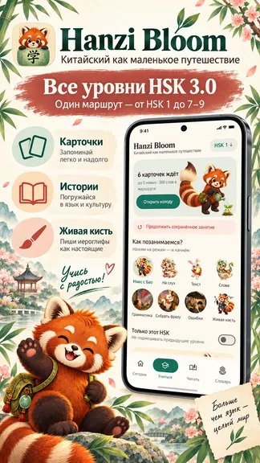
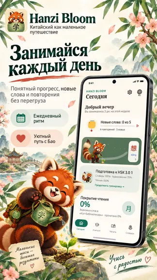
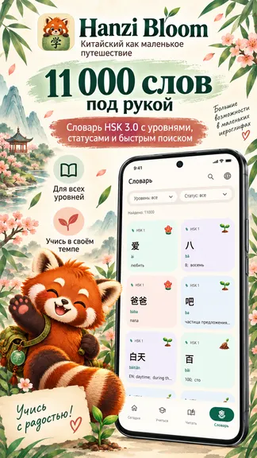
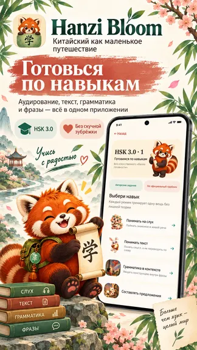
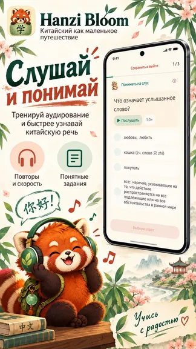

Внутри приложения
- Все уровни HSK 3.0Двигайтесь по понятному маршруту от простых слов к сложным.
- 1 940 карточекЗакрепляйте слова, иероглифы и значения в удобном формате.
- Ежедневный ритмУмные повторения возвращают материал в подходящий момент.
Китайский язык · шаг 2
Выращивайте словарный запас последовательно — от базовой лексики HSK 1 до продвинутых уровней HSK 3.0. Карточки, умные повторения и понятный прогресс помогают заниматься регулярно без перегруза.
HSK 3.0 · 1 940 карточек · повторение




Если иероглифы пока кажутся набором черт, начните с Hanzi Keys. Там вы разберётесь с ключами, а затем продолжите учить слова в Hanzi Bloom.